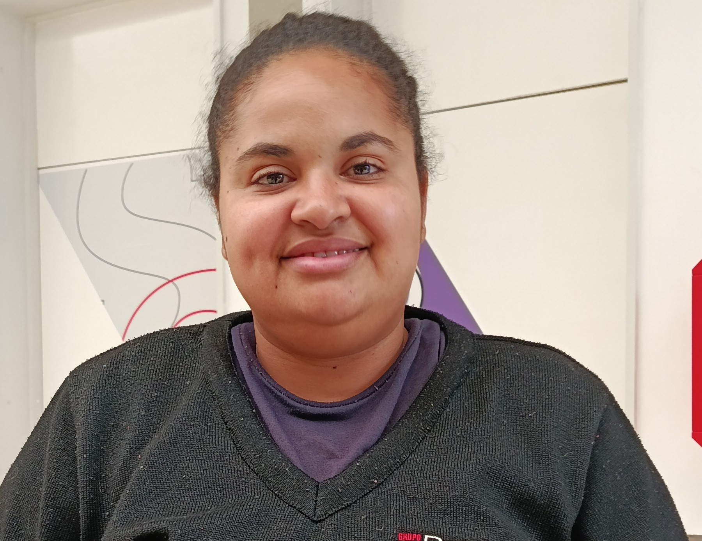

MULHERES —
Limpeza
Maria Lúcia
Maria Lúcia atua há 7 anos no SESI, onde iniciou como auxiliar de limpeza e, com dedicação, tornou-se líder e encarregada. Antes, trabalhou em fábricas e chegou à instituição por indicação. Hoje, encontra sua maior satisfação em ajudar as pessoas, liderar a equipe e contribuir para o bom funcionamento da escola.

Desafio
Superar os altos e baixos da vida com força e determinação.
Significado de trabalhar com a educação
É gratificante, pois gosta de crianças e de fazer parte do ambiente escolar.
Importância da função
Desenvolver responsabilidade, saber lidar com pessoas e trabalhar em equipe.
Conquistas
Conquistar seu espaço no SESI e construir uma trajetória de dedicação e crescimento profissional.
Mãos que cuidam e dedicação que transforma
Maria Lúcia se marcou pela amizade com Cleide e encontra motivação em trabalhar com o que gosta. Valoriza o trabalho em equipe e deseja que todos cresçam profissionalmente e contribuam para o SESI.
Mensagem aos alunos
“Estudem, trabalhem, para que vocês não precisem larvar banheiros, porque é difícil”Eliane
Eliane de Matos Souza atua há 1 ano e 6 meses na equipe de limpeza do SESI. Ingressou na instituição por indicação e tem sua mãe como maior inspiração, que representa uma importante referência em sua vida.

Desafio
Lidar com a saída de pessoas especiais que fizeram parte de sua trajetória no SESI.
Significado de trabalhar com a educação
Contribuir para o aprendizado e o desenvolvimento das próximas gerações
Importância da função
Manter a escola limpa, organizada e acolhedora.
Conquistas
Conquistar a oportunidade de fazer parte da instituição SESI.
Mãos que cuidam e dedicação que transforma
Eliane se motiva ao ver seu trabalho valorizado e reconhecido. Com fé, pede a Deus força e ajuda para continuar realizando suas tarefas com dedicação e superar os desafios do dia a dia.
Mensagem aos alunos
“Não desistam e terminem o estudo para terem um bom trabalho.”